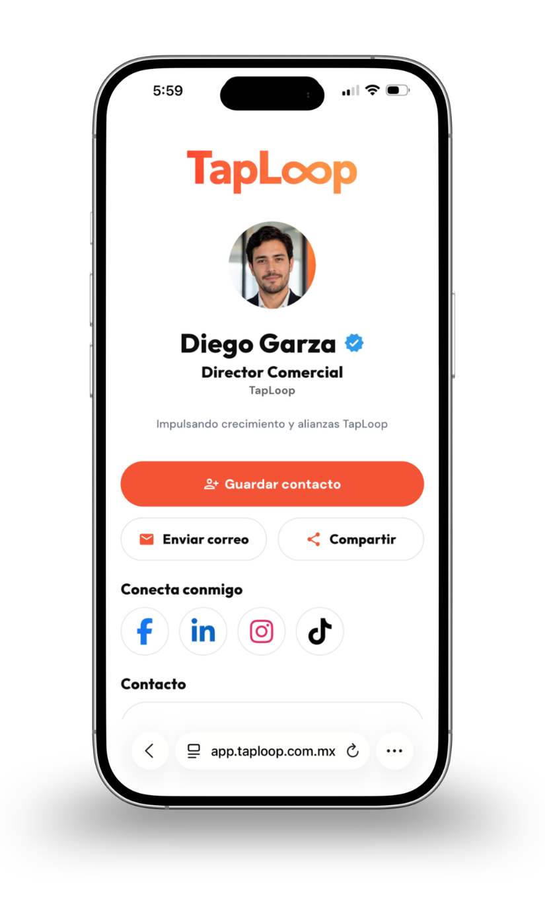

AHORRA 20%

Tarjeta NFC
Tarjeta NFC personalizada con perfil digital incluido.
Tarjetas de presentación digital personalizadas, con envío a Querétaro y toda la zona metropolitana de Querétaro.
Tarjeta NFC personalizada con perfil digital incluido.

Tarjeta NFC metálica premium con perfil digital incluido.
Tarjetas NFC en Querétaro
Querétaro es uno de los polos industriales y aeroespaciales más importantes de México, con una comunidad empresarial que crece en los parques industriales de El Marqués y Bernardo Quintana. Para profesionales y empresas de los sectores aeroespacial, automotriz y de manufactura avanzada, una tarjeta NFC de TapLoop ofrece una forma moderna y profesional de compartir contacto en ferias, reuniones de negocio y eventos de networking en la ciudad.
Qué incluye una tarjeta NFC TapLoop
Diseño, programación NFC, código QR y perfil digital configurados antes del envío a Querétaro.
Logo, colores y datos alineados a tu marca.
Contacto, WhatsApp, redes y enlaces en un solo lugar.
Dos formas de abrir el mismo perfil, sin apps.
Entrega mediante paquetería nacional a todo Querétaro.

Dudas frecuentes
Sí. Enviamos a toda la zona metropolitana de Querétaro y a los parques industriales de la región a través de paqueterías nacionales, con seguimiento del pedido hasta la entrega.
Trabajamos con profesionales y empresas de los sectores aeroespacial, automotriz, manufactura y servicios que buscan una presentación moderna y profesional en reuniones, ferias y eventos de networking.
Es una tarjeta física con tecnología NFC y código QR que abre un perfil digital personalizado con tus datos de contacto, WhatsApp, redes sociales y enlaces importantes.
La tarjeta PVC es ligera y versátil para uso diario o equipos. La metálica ofrece una presentación premium para directivos y contactos de alto valor.

Cuéntanos si necesitas una tarjeta NFC digital PVC, una tarjeta metálica o una solución para todo tu equipo en Querétaro.